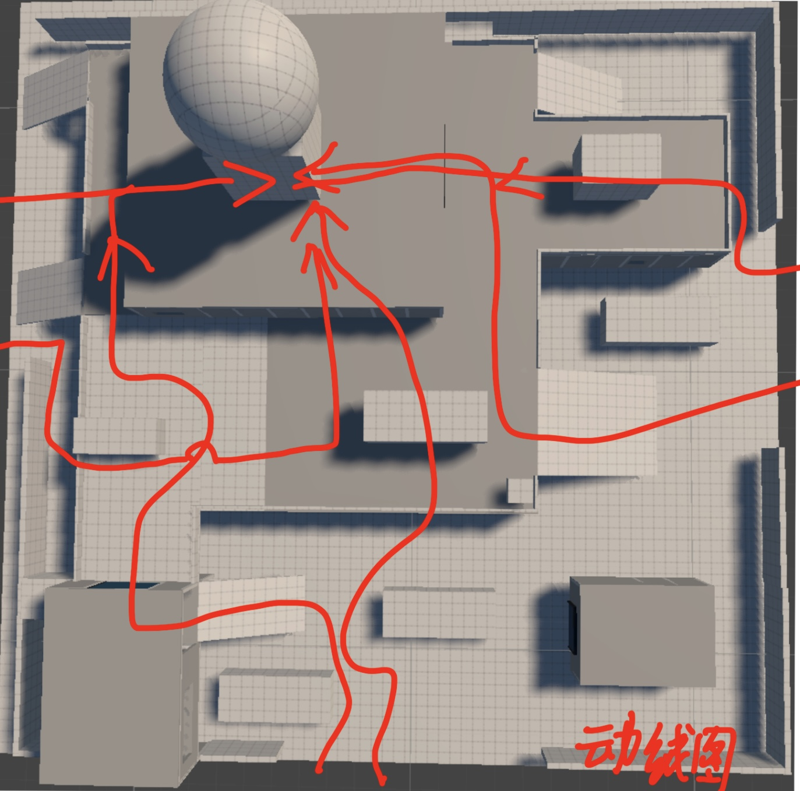
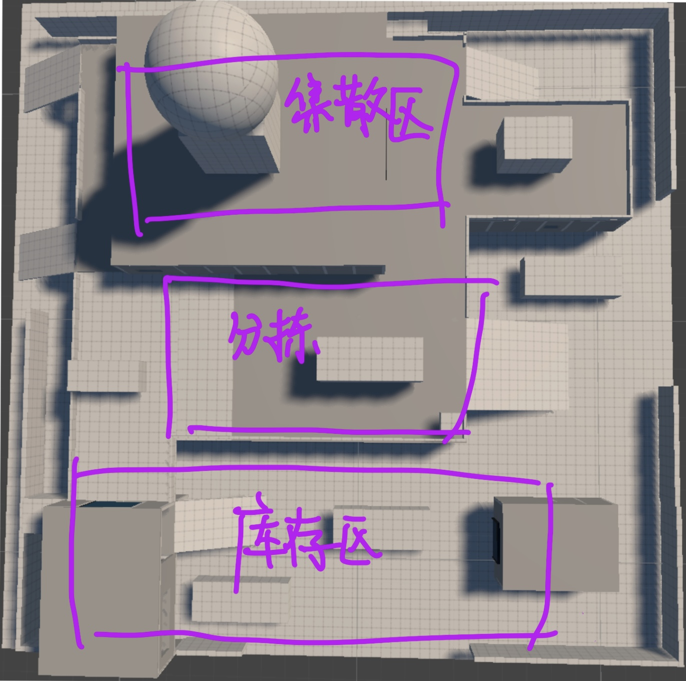

空间越通透，
选择反而越少。
一眼穿透整个房间，交火便会隔着几十米提前发生。玩家不敢进、不敢搜，也没有安全重整的片刻；仓库退化成几条固定枪线。
这是一项关于战斗决策与交战区域组织的白盒练习。我关注的是：如何通过空间分区、动线、掩体和资源，引导玩家进入特定区域发生战斗，并在进攻、换位与撤离之间做出判断。


长视线、空地和少量硬掩体会把战斗压成枪法检定：先手的人继续压，失势的人无处断线。对高机动、长 TTK 的战术竞技来说，这浪费了最有价值的那一秒——玩家中枪后重新做决定的时间。
一眼穿透整个房间，交火便会隔着几十米提前发生。玩家不敢进、不敢搜，也没有安全重整的片刻；仓库退化成几条固定枪线。
我不把中心默认成唯一热区，而是让集散、分拣、库存各自拥有“去的理由”、战斗距离和风险画像；它们能分别承接交火，也能通过多条路线互相外溢。
我先按真实仓储功能切大区，再让功能决定道具词汇与战斗尺度。这样，掩体首先像仓库里本来就有的东西，其次才承担玩法作用。
红色动线记录了我对入口、汇合与撤离的第一轮推演。路线可以在中央发生交集，却不能把所有人永久吸进同一个火力漏斗；一条路的价值，也必须能随敌人、装备与毒圈方向改变。
空间尺寸不能只靠俯视图判断。我把 Character、Camera、Controls 放回同一次战斗行为里：角色移动了多远、玩家能看到什么、输入后能否及时完成动作，共同决定一段距离是否真的可玩。
冲刺、持枪移动、滑铲与跳跃决定了玩家跨越空地的速度和姿态。这里以约 7.6 m/s 的收枪冲刺为基准，把“危险”换算成实际暴露时间。
站立与蹲伏眼高决定掩体能否探射、能否完全断视线；俯角、开窗和货架镂空则决定不同高度之间交换多少信息。
玩家需要在冲刺、滑铲、跳跃、攀爬和持枪之间切换。空间必须给输入和动作完成留出时间，否则路线看似存在，实战中却无法选择。
有的掩体让玩家停顿，有的透露信息，有的诱导绕行，还有一种能由玩家亲手改变空间。它们不是“多摆几个箱子”，而是不同的战术语言。
每一轮都先回答“为什么”，再回答“摆什么”。这样发现结构问题时，我能回到上游判断修改，而不是只在场景里继续堆细节。
这些问题把“让玩家做决策”继续拆到具体空间里。每一次摆放门、掩体、高差或资源时，我都用它们检查：战斗是否在预期区域发生，玩家是否真的拥有可以判断的下一步。
分区名称本身不会制造战斗。每个子战场必须提供独立的资源收益、进攻角度或轮转价值；否则它只是俯视图上的一个框。
核心战位不直接对门。入口后先留出观察与选路的缓冲空间，让交火发生在玩家进入区域之后，而不是把门口做成固定枪线。
用更好的信息、装备、高位或侧背角度提供移动收益，并让暴露时间成为清楚的代价。没有收益的危险路线不会形成选择，只会被放弃。
每个交火点至少需要两条脱离线；撤离首段先利用门、拐角或高差快速断开视线，再把玩家送往下一条掩体带或轮转路线。
夹层和屋顶可以更早获得信息，但必须保留背面暴露、俯角死区与多个上行口。强点应该可以守住一段时间，而不是让对手失去反制。
两队交火的枪声会吸引新的队伍。因此每个区域都要按三队同场推演：第三方先看到谁、从哪条线进入、原交火双方如何获得预警。
门和近距离隔断要阻止视线穿透整个仓库，让玩家能够搜索、换甲和整理信息；但这些安全区仍可通过开门、踹门或绕行被打破。
仓内结构需要减少跨区击杀，让库存区的 CQC、分拣区的低姿态机动和集散区的中距交火各自成立，同时保留人员流动的通路。
托盘、叉车、周转笼和打包台先遵守仓储功能，再承担掩体作用。道具按作业关系成组出现，避免均匀撒箱子带来的竞技场感。
不一定。热度必须由资源与据点价值支撑。对 BR POI 来说，更重要的是把大战拆成数个有意义的子战场，并让它们保持隔而不断。
网页版试玩接入后，我会把“爽、动态、快速决策”翻译成能观察和记录的行为：玩家在哪停、为何换路、失势时能否真的逃走。
记录外围到核心、进攻到撤离的耗时；任何连续 10 秒没有新信息或新选择的段落进入重构。
测试夹层、屋顶与货架高位的先手收益，同时确认背面暴露、多路上行与视野死角能否形成反制。
不只记录走了哪条路，还追问是敌情、资源、毒圈还是撤离压力触发选择，验证空间是否真的在驱动决策。
试玩内容已经接入，但不会随案例页自动下载。玩家主动点击“开始加载游戏”后，页面才会载入 Unity 构建，避免约 21 MB 的游戏资源影响前面的阅读体验。
游戏尚未加载。只有点击下方按钮后，页面才会开始下载约 21 MB 的 Unity WebGL 内容。
这次练习重点呈现空间分区、玩家动线与战斗决策之间的关系，以及这些判断如何在后续实测中被验证和调整。